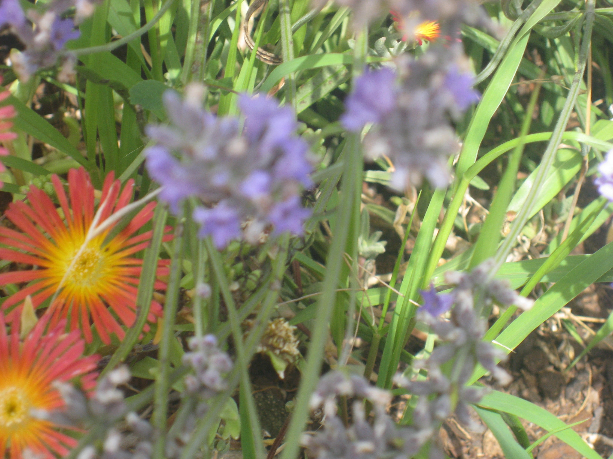

Ramon Trepat Burgués
Perfil
Tècnic especialista en il·luminació. El meu perfil de 20 anys de
carrera professional és de una rica varietat de projectes en Carrer
Industria 5, 25300 diferents àmbits de la il·luminació, tant de
espectacles en Tàrrega directe, musicals, teatrals i TV, així com
gravacions cinematogràfiques o televisives. Durant tot aquest temps
he estat exercint amb passió des de diferents càrrecs, tant com a
tècnic, operador o responsable.
Experiència
-
Tècnic / Operador Sound Ilerda, s.l. Tres 80 s.l. , Lleida 1999
- 2001 Orquestra Moby Dic, Zum-Zum Teatre
-
Tècnic / Operador / Responsable Rampa Huesca, s.l. , Huesca -
2001 - 2005 Dover, M-Clan, Amaral, Canta Conmigo.
-
Tècnic / Operador / Responsable Autònom, Barcelona - 2005 - 2021
He treballat per: Iluminación Albadalejo, Música Viva, Rampa
Huesca, Auditori BCN, Hispa-Lite, Cinelux, Fluge, EML, PRG,
Amalgama.
-
Feines destacades: Esdeveniments musicals com Sonar, Primavera
Sound, Monegros Desert Festival, Ola, LowCost, Resurection, Rock
Fest. Programes de TV com Fin de año TV Aragón, Atrapa un
millón, Ahora caigo, Tu si que vales, En el Aire (Andreu
Bonafuente), Bailando con las estrellas, Tu cara me suena, En
Línea (TV2). Esdeveniments corporatius de La Caixa, Novartis,
Repsol, Passarel·la BCN 080.
Formació
- CFGS Multimèdia (Lleida) - 2001
-
Prova Accés a la Universitat Majors 25 anys (Barcelona) - 2011
Idiomes
- Català i castellà, nivell alt.
- Anglès, nivell bàsic.
Aptituds
Gran capacitat de aprenentatge i actualització. He estat pioner en
operar servidors de vídeos per control DMX i Kinetic ball.
Experiència en Motors per estructures, Motors de velocitat variable,
Canons de seguiment per control remot (Robe), estructures Suport i
Rigging de Prolyte, Litec, James-Thomas.
Altres dades interès
- Permís de coduir.
- Carnet de director del lleure.
- Col·laboro amb Fundació Xarxa, Tàrrega.
